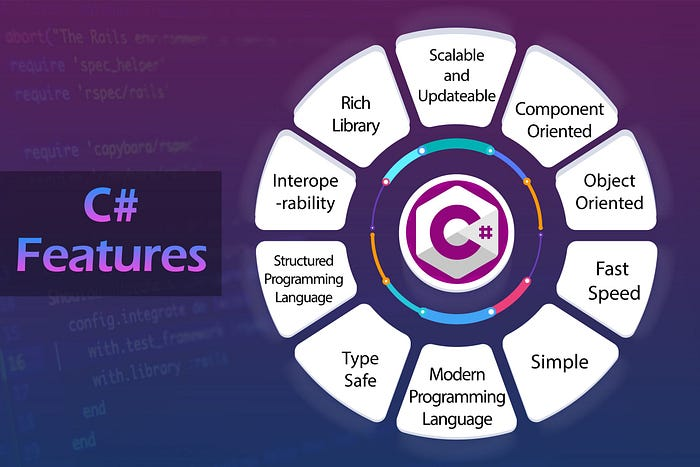

O Futuro do Desenvolvimento com C#: Tendências e Inovações
Escrito por João Paulo dos Santos Collado - Atualizado em 05/07/24
Introdução
Nos últimos anos, a linguagem C# tem se consolidado como uma das principais ferramentas para o desenvolvimento de software, graças à sua versatilidade, robustez e suporte da Microsoft. Com o avanço tecnológico, novas tendências e inovações estão moldando o futuro do desenvolvimento com C#. Neste artigo, exploraremos algumas dessas tendências e como elas estão impactando a comunidade de desenvolvedores.
Histórico
A linguagem C# foi desenvolvida pela Microsoft sob a liderança de Anders Hejlsberg, um dos principais arquitetos de linguagens de programação. Lançada em 2000 como parte do .NET Framework, C# foi projetada para ser uma linguagem moderna, simples e orientada a objetos, inspirada em linguagens como C++, Java e Delphi (também desenvolvida por Hejlsberg). O principal objetivo era criar uma linguagem que pudesse aproveitar ao máximo o novo framework .NET, facilitando o desenvolvimento de aplicações Windows e web.
Desde seu lançamento, C# passou por diversas atualizações significativas. A cada nova versão, a linguagem recebeu melhorias e novas funcionalidades que aumentaram sua robustez e flexibilidade. Versões importantes incluem o C# 2.0, que introduziu genéricos, e o C# 3.0, que trouxe a Language Integrated Query (LINQ), transformando a forma como os desenvolvedores manipulam dados. Com o lançamento do .NET Core em 2016, C# ganhou ainda mais força, permitindo o desenvolvimento multiplataforma e tornando-se uma escolha ainda mais versátil para desenvolvedores em todo o mundo.
Principais características
Orientação a objetos
C# é uma linguagem fortemente orientada a objetos, o que significa que todo elemento no C# é um objeto ou interage com objetos. Isso facilita a modelagem do mundo real em software, permitindo aos desenvolvedores organizar seu código em unidades reutilizáveis. A orientação a objetos também promove conceitos como encapsulamento, herança e polimorfismo, fundamentais para o desenvolvimento de software modular e escalável.
Tipagem Forte
C# é conhecido por sua tipagem forte, o que significa que todos os tipos de variáveis devem ser declarados explicitamente antes de serem usados. Isso ajuda a detectar erros de tipo em tempo de compilação, evitando muitos bugs comuns em linguagens de tipagem dinâmica. Além disso, a tipagem forte melhora a legibilidade do código e facilita a manutenção, tornando-o mais previsível e menos propenso a erros.
Garbage Collection
Uma das características mais poderosas do C# é seu sistema de Garbage Collection (coleta de lixo), que gerencia automaticamente a alocação e liberação de memória. Isso significa que os desenvolvedores não precisam se preocupar com a desalocação manual de memória, evitando vazamentos de memória e tornando o desenvolvimento mais seguro e menos propenso a erros relacionados à gestão de recursos.
Linq
Language Integrated Query (LINQ) é uma extensão poderosa do C# que permite aos desenvolvedores escrever consultas SQL-like diretamente em código C#. Com LINQ, é possível consultar e manipular coleções de objetos, bancos de dados, e outras fontes de dados de forma intuitiva e legível. Isso não só simplifica o acesso e a manipulação de dados, mas também torna o código mais expressivo e fácil de entender, melhorando a produtividade dos desenvolvedores.
Programação Assíncrona
C# oferece suporte robusto para programação assíncrona, permitindo que operações demoradas sejam realizadas de forma eficiente sem bloquear a thread principal. Isso é essencial para criar aplicações responsivas que possam lidar com muitas operações simultâneas, como operações de rede e acesso a bancos de dados. Com as palavras-chave async e await, os desenvolvedores podem escrever código assíncrono de maneira natural e eficaz, melhorando significativamente o desempenho e a experiência do usuário em aplicações modernas.
Principais funcionalidades e diferencias do C#.
Aplicações no mercado
C# é utilizado em diversas áreas, incluindo:
- Desenvolvimento Web: Com ASP.NET, é uma escolha popular para aplicações web robustas.
- Aplicações Desktop: Utilizando Windows Forms e WPF para aplicações Windows.
- Desenvolvimento Mobile: Com Xamarin, permite criar apps nativas para iOS e Android.
- Jogos: Amplamente utilizado com o Unity, um dos motores de jogos mais populares.
- Serviços de Nuvem: Forte integração com a Azure, permitindo desenvolvimento de soluções cloud.
Cenário do Mercado de C#
Salários Médios das Áreas que Utilizam C#:
| Área | Salário Médio |
|---|---|
| Desenvolvedor Web | R$ 8.000,00 |
| Desenvolvedor de Jogos | R$ 9.500,00 |
| Engenheiro de Software | R$ 12.000,00 |
| Desenvolvedor de Aplicações Desktop | R$ 7.500,00 |
| Analista de Dados | R$ 10.000,00 |
Aprendizado e Desenvolvimento
Se você está interessado em ingressar no mundo da programação ou expandir seus conhecimentos, aprender C# pode ser uma excelente escolha. Com uma base sólida em C#, você estará preparado para enfrentar desafios de desenvolvimento de software em diversos cenários e contribuir para projetos significativos.
Conclusão
O futuro do desenvolvimento com C# é brilhante, impulsionado por inovações e tendências que expandem as possibilidades para desenvolvedores. Com a unificação das plataformas .NET, o poder do Blazor, avanços em IA e ML, e suporte robusto para desenvolvimento mobile e cloud, C# se posiciona como uma linguagem versátil e poderosa para enfrentar os desafios do desenvolvimento moderno. Fique atento às tendências e inovações para aproveitar ao máximo essa linguagem incrível.
C# é a linguagem mais bala de todas.